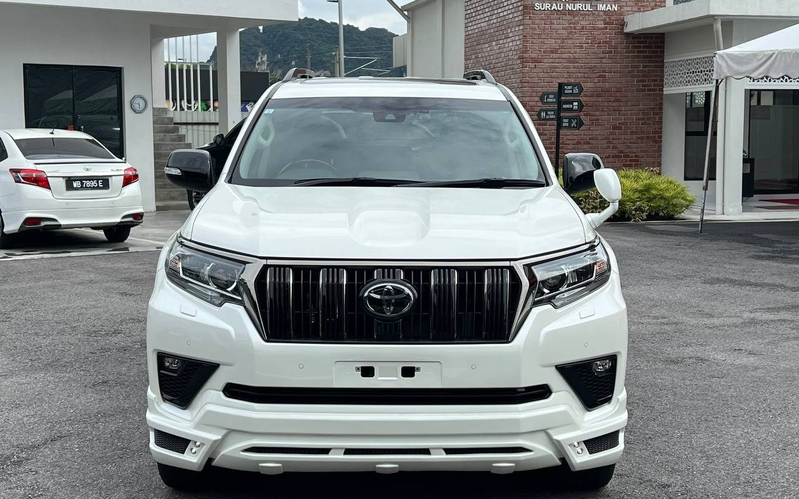

Your brief
Kongsi model, bajet dan pilihan utama. Tiada komitmen.

Japan selected · Kuala Lumpur
Kereta premium yang betul bukan sekadar nampak hebat. Ia mesti kena dengan hidup, bajet dan cara anda bergerak.
— unit ready stock
01 / The collection
Memuatkan koleksi…
Availability berubah pantas. WhatsApp advisor untuk pengesahan terakhir.
Lihat semua unit ↗02 / Izuwan Select
Model, tahun, grade, warna dan bajet pilihan anda—dicari dari auction Jepun dengan proses yang jelas dari brief hingga kunci di tangan. Tiada deposit untuk mula carian; anda lihat laporan auction dahulu sebelum apa-apa keputusan.
Kongsi model, bajet dan pilihan utama. Tiada komitmen.
Semak unit, condition dan auction sheet asal bersama advisor.
Kami urus pembelian, import dan handover. Anda dilapor setiap minggu.
Auction sheet transparency
Setiap unit tertakluk kepada laporan auction sebenar dan pemeriksaan. Minta advisor terangkan report sebelum membuat keputusan.
03 / Finance tools
Buat anggaran komitmen bulanan dalam beberapa saat. Nilai ini ialah anggaran awal; kelulusan dan kadar akhir tertakluk kepada bank.
Pinjaman RM 198,000 selama 9 tahun
Apply Loan Pre-Check ↗Anggaran hire purchase kadar rata. Tidak termasuk insurance, yuran atau komitmen lain. Tertakluk kepada kelulusan bank.The Izuwan way
Perjalanan Izuwan bermula pada 2011—daripada kereta terpakai kepada kepakaran dalam unit reconditioned Jepun. Hari ini, team kami membantu pelanggan faham pilihan, condition dan proses pembelian sebelum membuat keputusan besar.
04 / New keys. New stories.
Loading real delivery stories…
Established in Kuala Lumpur
Bumiputera recond specialist
05 / Taman Wahyu, KL